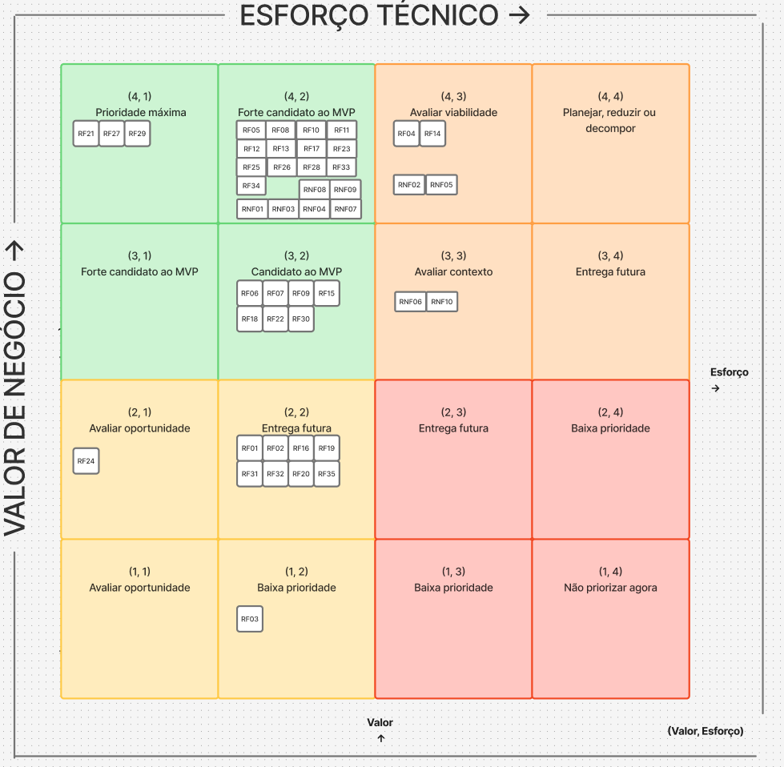

10 BACKLOG DO PRODUTO
10.1 Backlog Geral
10.2 Priorização do backlog e MVP
10.2.1 Critérios usados
Para a priorização do backlog avaliamos cada requisito funcional nos seguintes critérios:
- Valor de Negócio: (0,4 x MoSCoW) + (0,6 x Frequência de uso)
Usamos dois critérios para definir o valor de negócio que recebem valores de acordo com a sua especificação, o primeiro é o MosCow que é classificado como:
| Pontuação | Classificação | Interpretação |
|---|---|---|
| 4 | Must have | Requisito indispensável para atender uma necessidade central do IBRADA, viabilizar um fluxo principal do produto, atender obrigação relevante ou permitir o funcionamento de outras funcionalidades. |
| 3 | Should have | Requisito importante e com impacto significativo, mas cuja ausência temporária não impede o funcionamento dos principais fluxos do produto. |
| 2 | Could have | Requisito que agrega valor à solução, porém pode ser implementado posteriormente sem comprometer os objetivos principais da primeira versão. |
| 1 | Won't have now | Requisito de baixo valor para o momento atual, podendo ser planejado para versões futuras sem impacto relevante sobre o funcionamento inicial da solução. |
E o segundo é a frequencia de uso:
| Pontuação | Interpretação |
|---|---|
| 4 | diariamente/semanalmente |
| 3 | mensalmente |
| 2 | semestralmente |
| 1 | anualmente |
O peso maior na frequencia foca em entregar ao cliente um produto inicial que cubra as principais funcionalidades que ele deseja e usa mais no seu contexto inicial.
Para os requisitos não funcionais o valor de negócio leva em consideração apenas o contexto do projeto.
- Esforço técnico: (Esforço + Complexidade + Lacuna de capacidade) / 3
A avaliação técnica tanto dos funcionais quanto dos não funcionais foi realizada pela equipe do projeto considerando três critérios: esforço necessário para implementação, complexidade técnica e lacuna de capacidade da equipe.
Utilizamos formulários onlines para capturar esses dados.
Cada critério foi avaliado em uma escala de 1 a 4, orientada de modo que valores maiores representem maior dificuldade para implementação.
| Pontuação | Interpretação | Descrição |
|---|---|---|
| 1 | Esforço baixo | Até 2 horas |
| 2 | Esforço moderado | Entre 2 e 6 horas |
| 3 | Esforço alto | Entre 6 e 12 horas |
| 4 | Esforço muito alto | Mais de 12 horas |
| Pontuação | Interpretação |
|---|---|
| 1 | Utiliza solução conhecida, com poucas dependências |
| 2 | Exige alguma investigação ou integração |
| 3 | Possui várias dependências ou incertezas técnicas |
| 4 | Apresenta elevada incerteza, integração crítica ou tecnologia não dominada |
| Pontuação | Interpretação |
|---|---|
| 1 | A equipe domina plenamente os conhecimentos necessários |
| 2 | A equipe possui conhecimento suficiente, com pouca aprendizagem adicional |
| 3 | A equipe precisa desenvolver conhecimentos relevantes |
| 4 | A equipe ainda não possui os conhecimentos ou recursos necessários |
Tabelas com todos os valores detalhados antes de calcular as médias TODO
10.2.2 Tabela de critérios
Após todos os calculos, a tabela final ficou assim:
| ID | Nome | Descrição | Relação | Avaliação MoSCoW | Avaliação Frequência de Uso | Esforço Técnico |
|---|---|---|---|---|---|---|
| RF01 | Cadastrar projetos | Permitir que os gestores do IBRADA possam cadastrar projetos de regularização fundiária e ambiental de propriedades rurais, inclusão sócio-produtiva e assistência técnica e extensão de áreas rurais em um dashboard. | CP1 | 3 | 2 | 2,17 |
| RF02 | Editar projetos | Permitir que os gestores possam editar informações sobre os projetos do dashboard. | CP1 | 3 | 2 | 1,67 |
| RF03 | Remover projetos | Permitir que os gestores possam remover os projetos do dashboard. | CP1 | 3 | 1 | 1,50 |
| RF04 | Exibir dashboard de impacto | Permitir que visitantes visualizem, em um painel de acesso público, os indicadores de impacto dos projetos. | CP1 | 4 | 4 | 2,89 |
| RF05 | Apresentar formulário de triagem | Permitir que o visitante (possível turista, apoiador ou usuário buscando regulamentação ambiental) preencha um formulário de triagem guiado com campos simplificados para identificar o tipo de solicitação e seu perfil, armazenando os dados no sistema e o encaminhando corretamente. | CP2 | 4 | 4 | 1,83 |
| RF06 | Visualizar catálogo de ecoturismo | Permitir aos usuários visualizar o catálogo de experiências de ecoturismo, incluindo descrições, datas, disponibilidade de vagas e valores. | CP3 | 4 | 3 | 1,78 |
| RF07 | Detalhar experiências | Permitir que o usuário visualize informações completas de uma experiência de ecoturismo selecionada e com possibilidade de compartilhamento de seu conteúdo. | CP3 | 3 | 3 | 1,61 |
| RF08 | Cadastrar clientes | Permitir que os visitantes interessados em reservas se cadastrem em novas contas como clientes. | CP3 | 4 | 4 | 1,72 |
| RF09 | Editar perfil de clientes | Permitir que clientes possam editar seus dados pessoais registrados em suas próprias contas. | CP3 | 4 | 3 | 1,50 |
| RF10 | Realizar login de cliente | Permitir que clientes cadastrados acessem o sistema mediante validação de credenciais. | CP3 | 4 | 4 | 2,06 |
| RF11 | Encerrar sessão de cliente | Permitir que clientes encerrem sua sessão ativa no sistema. | CP3 | 4 | 4 | 1,50 |
| RF12 | Selecionar pacote de ecoturismo | Permitir que o cliente realize a reserva dos pacotes de ecoturismo selecionados. | CP3 | 4 | 4 | 2,22 |
| RF13 | Confirmar reserva | Permitir que o cliente confirme a reserva antes do checkout. | CP3 | 4 | 4 | 1,72 |
| RF14 | Pagar reserva | Permitir que o cliente realize pagamento de suas reservas de pacotes de ecoturismo. | CP3 | 4 | 4 | 3,39 |
| RF15 | Cadastrar experiências de ecoturismo | Permitir a equipe do IBRADA cadastrar experiências de ecoturismo no sistema. | CP3 | 3 | 3 | 1,67 |
| RF16 | Editar experiências de ecoturismo | Permitir a equipe do IBRADA editar experiências de ecoturismo no sistema. | CP3 | 2 | 2 | 1,56 |
| RF17 | Alterar disponibilidade de experiência de ecoturismo | Permitir que o gestor marque uma experiência de ecoturismo como disponível ou indisponível para novas reservas. | CP3 | 4 | 4 | 1,61 |
| RF18 | Cadastrar oportunidades de voluntariado | Permitir ao gestor cadastrar oportunidades de voluntariado, definindo habilidades requeridas, duração, disponibilidade e projeto associado. | CP4 | 4 | 3 | 2,06 |
| RF19 | Editar oportunidades de voluntariado | Permitir ao gestor editar as informações das oportunidades de voluntariado registradas no sistema. | CP4 | 4 | 2 | 1,61 |
| RF20 | Gerenciar papel de gestor | Permitir que um gestor cadastre outros membros da equipe do IBRADA como gestores, concedendo a eles acesso aos painéis do sistema. | CP4 | 4 | 2 | 2,22 |
| RF21 | Listar oportunidades de voluntariado | Permitir que o voluntário consulte a lista de oportunidades de voluntariado abertas. | CP4 | 4 | 4 | 1,44 |
| RF22 | Visualizar detalhes de oportunidade de voluntariado | Permitir que o voluntário visualize as informações detalhadas de uma oportunidade selecionada, incluindo habilidades requeridas, duração, disponibilidade e projeto associado. | CP4 | 4 | 3 | 1,50 |
| RF23 | Cadastrar perfil do voluntário | Permitir que usuários se cadastrem como voluntários, informando suas habilidades, experiências, áreas de interesse e disponibilidade. | CP4 | 4 | 4 | 1,89 |
| RF24 | Editar perfil do voluntário | Permitir que usuários cadastrados como voluntários possam editar suas informações do perfil. | CP4 | 4 | 2 | 1,39 |
| RF25 | Candidatar-se a oportunidade | Permitir que o voluntário autenticado se candidate a uma oportunidade de voluntariado aberta. | CP4 | 4 | 4 | 1,72 |
| RF26 | Realizar login de voluntário | Permitir que voluntários cadastrados acessem o sistema mediante validação de credenciais. | CP4 | 4 | 4 | 2,00 |
| RF27 | Encerrar sessão de voluntários | Permitir que voluntários encerrem sua sessão ativa no sistema. | CP4 | 4 | 4 | 1,39 |
| RF28 | Visualizar candidatos | Permitir que gestores visualizem todos os candidatos a uma oportunidade em funil. | CP4 | 4 | 4 | 1,94 |
| RF29 | Registrar consentimento de uso de dados | Permitir que o usuário visualize o termo de consentimento (LGPD) no momento do cadastro e o aceite explicitamente, registrando data, hora e versão do termo aceito. | CP4 | 4 | 4 | 1,44 |
| RF30 | Configurar preferências de notificação | Permitir que o usuário selecione, edite ou desative os alertas de projetos de seu interesse. | CP5 | 4 | 3 | 2,11 |
| RF31 | Exibir estatísticas de alcance das notificações | Permitir que o gestor visualize estatísticas de alcance das notificações enviadas. | CP5 | 3 | 2 | 2,33 |
| RF32 | Gerenciar envio de notificações | Permitir que o gestor gerencie notificações enviadas. | CP5 | 2 | 3 | 1,94 |
| RF33 | Preencher solicitação de parceria | Permitir que um candidato a parceiro preencha um formulário simplificado para solicitação de parceria, coletando informações (data, tipo e área). | CP6 | 4 | 4 | 1,56 |
| RF34 | Visualizar propostas de parceria | Apresentar um painel centralizado para a equipe do IBRADA visualizar as solicitações de parceria recebidas. | CP6 | 4 | 4 | 1,61 |
| RF35 | Enviar resposta de solicitação | Permitir que o gestor escreva uma resposta a solicitação de parceria pelo sistema, que será enviada de forma automática por email para a empresa candidata. | CP6 | 2 | 2 | 1,78 |
| RNF01 | Responsividade da interface | A interface deve se adaptar a smartphones, tablets e desktops sem quebra de layout ou sobreposição. | Transversal — todas as CPs | 4 | - | 2 |
| RNF02 | Integridade transacional | O sistema deve garantir transações ACID e impedir reservas concorrentes para a mesma vaga, evitando overbooking. | CP3 | 4 | - | 3 |
| RNF03 | Desempenho do catálogo | As listagens de projetos e experiências de ecoturismo devem carregar em até 3 segundos em conexão de 15 Mbps. | CP1 e CP3 | 4 | - | 2 |
| RNF04 | Autenticação e autorização | O sistema deve negar acesso não autorizado e registrar tentativas de acesso às rotas de gerenciamento. | Transversal — CP1, CP3, CP4 e CP6 | 4 | - | 2 |
| RNF05 | Integração externa | Webhooks devem processar notificações de forma assíncrona em até 3 segundos e realizar até 5 tentativas de reprocessamento. | CP3 | 4 | - | 3 |
| RNF06 | Escalabilidade sob demanda | O sistema deve suportar 200 usuários simultâneos, com tempo de resposta de até 2 segundos para 95% das requisições e taxa de erro de até 1%. | CP1, CP3 e CP5 | 3 | - | 3 |
| RNF07 | Disponibilidade do sistema | A plataforma deve garantir disponibilidade mínima de 98% ao mês, com manutenções programadas fora do horário de pico. | Transversal — todas as CPs | 4 | - | 2 |
| RNF08 | Proteção de dados pessoais (LGPD) | O sistema deve proteger dados pessoais e sensíveis usando AES-256 para dados em repouso e TLS 1.2 ou superior em trânsito. | CP3, CP4 e CP6 | 4 | - | 2 |
| RNF09 | Usabilidade do formulário de triagem | O formulário deve ser simples para usuários com baixa familiaridade digital e alcançar taxa de conclusão mínima de 90%. | CP2 | 4 | - | 2 |
| RNF10 | Compatibilidade entre navegadores | O sistema deve manter paridade funcional e visual nas duas últimas versões estáveis do Chrome, Firefox, Safari e Edge. | Transversal — todas as CPs | 3 | - | 3 |
10.2.3 Matriz 4 x 4
Após a consolidação das avaliações de valor de negócio e esforço técnico, os requisitos funcionais foram posicionados em uma matriz 4 × 4, permitindo visualizar conjuntamente a importância de cada requisito para o negócio e o esforço necessário para sua implementação.
Para o posicionamento no eixo horizontal, o esforço técnico consolidado foi convertido para a escala de 1 a 4 conforme o valor obtido na avaliação técnica:
O eixo vertical representa o valor de negócio, avaliado junto ao cliente, enquanto o eixo horizontal representa o esforço técnico, avaliado pela equipe.
| Valor de negócio ↓ / Esforço técnico → | 1 — Baixo | 2 — Moderado | 3 — Alto | 4 — Muito alto |
|---|---|---|---|---|
| 4 — Muito alto | RF21, RF27, RF29 | RF05, RF08, RF10, RF11, RF12, RF13, RF17, RF23, RF25, RF26, RF28, RF33, RF34, RNF01, RNF03, RNF04, RNF07, RNF08, RNF09 | RF04, RF14 , RNF02, RNF05 | — |
| 3 — Alto | — | RF06, RF07, RF09, RF15, RF18, RF22, RF30 | RNF06, RNF10 | — |
| 2 — Moderado | RF24 | RF02, RF16, RF19, RF20, RF31, RF32, RF35, RF01 | — | — |
| 1 — Baixo | — | RF03 | — | — |
Matriz 4x4, em negrito são os que entrarão no MVP
imagem abaixo para controle de versão (última atualização 11/10/2026)

LINK
A partir da matriz realizamos a definição do MVP baseado nos requisitos localizados no quadrante superior esquerdo, no qual encontram-se aqueles com menor esforço técnico e maior valor de negócio.
A unica exceção é o RF14, que apesar de ter um esforço técnico mais alto, é um requisito primordial nessa primeira entrega para o cliente. Portando o RNF02 e o RNF05 que eram fortes candidatos ao MVP também entrarão por serem fortemente relacionados ao requisito RF14.